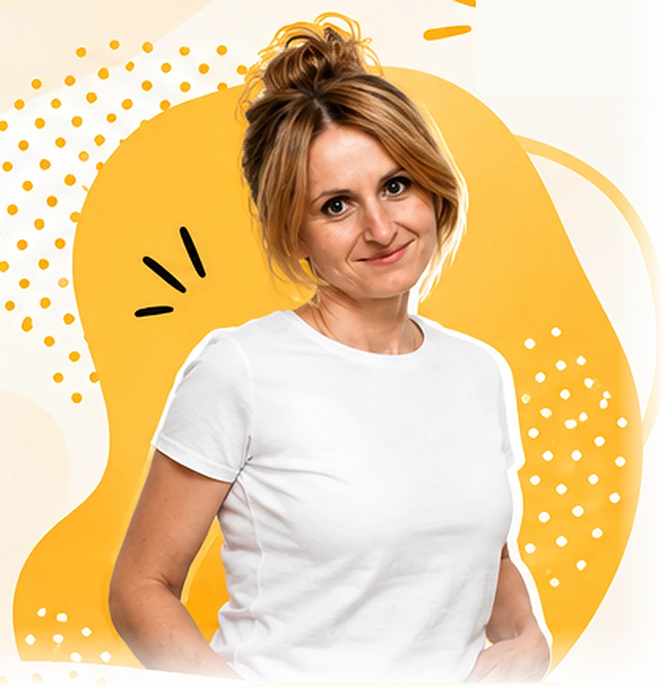

JustynaDeczewska
Od lat uczę dorosłych – na uczelni, w szkołach językowych, w firmach i na kursach indywidualnych. Jestem współautorką podręczników językowych dla dorosłych i dla uczniów szkół średnich. Podczas zajęć stawiam na dobrą atmosferę, aktywność i autentyczną komunikację. Chciałabym, żeby z moich lekcji wychodziło się nie tylko z nowymi słówkami, ale też z uśmiechem i odrobinę większą wiarą we własne możliwości. Wierzę, że na dobrej lekcji uczą się wszyscy – także nauczyciel.
Lubię szukać prostych i nieszablonowych sposobów na to, żeby język naprawdę „zadziałał” poza salą lekcyjną. Cenię zadania, które angażują, budzą ciekawość i dają poczucie, że języka można używać od pierwszych chwil, nawet jeśli nie wszystko jeszcze potrafimy powiedzieć. W nauczaniu najbardziej fascynuje mnie możliwość wejścia na chwilę w świat drugiego człowieka – i spotkania się tam poprzez język.